For one week in April, Seville moves out of the city and into a temporary town of striped canvas on the far bank of the river.
Semana Santa is the older and more solemn of Seville’s two great weeks. The Feria is the other half of the year, and the city treats it with the same seriousness: dresses ordered months ahead, horses groomed, and a whole quarter of the Los Remedios district given over to about a thousand tents.
It began in 1847 as a livestock fair and kept the shape of one — the horses, the rows of stalls, the fairground at the end. What it has become is the biggest party in Spain, and the clearest window into how Sevillians actually enjoy themselves.
In short
- —It falls two weeks after Easter Sunday, so the dates move every year.
- —It opens at midnight with the alumbrado, the lighting of the portada, and closes a week later with fireworks over the river.
- —Most of the thousand casetas are private. The district casetas are open to anyone.
- —Horses and carriages have the streets from midday until eight; after that it is all dancing.
01
When it falls
The Feria has no fixed date. It follows Easter, opening two weeks after Easter Sunday, which puts it anywhere from mid-April to early May. In years when it would fall on May Day the city shifts it, so the only safe way to plan is to check the year you are travelling.
The fairground is the Real de la Feria, in Los Remedios across the river, and it is built from nothing each spring: streets laid out on a grid, named after bullfighters, and taken down again a week later. If you walk the site in March there is nothing there.
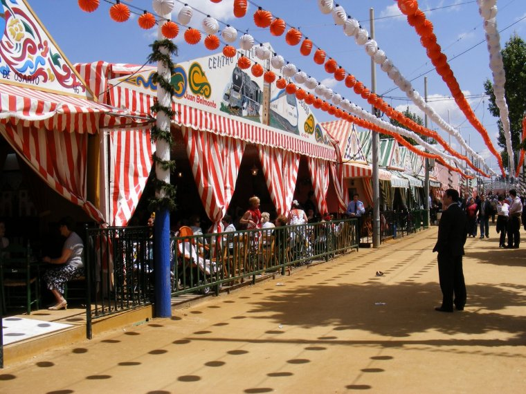
02
El alumbrado
The week opens at midnight on the Saturday, when the portada is switched on. The portada is a temporary gate the size of a building, designed new every year around a monument or a moment in the city’s history, and its lighting is the moment the Feria exists.
Before it, families sit down to the pescaíto — a dinner of fried fish in the caseta that is as fixed a part of the week as the lights themselves. After it, the thousands of paper lanterns down every street come on at once.
The week ends the following Saturday at midnight with fireworks over the Guadalquivir, watched from the bridges and the riverbank.
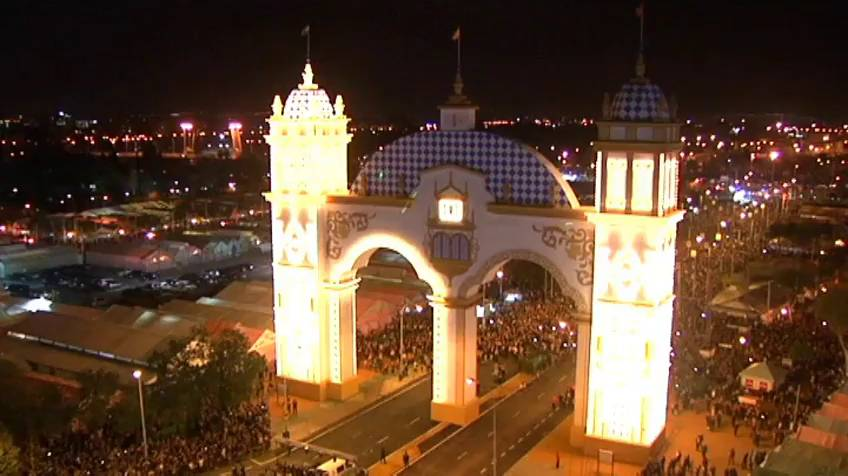
03
Las casetas
A caseta is a tent with a wooden frame, striped canvas walls, a tiled floor, a bar along one side and tables of families eating. There are around a thousand of them, and most are private — owned by families, groups of friends, businesses, clubs or political parties, and you go in because somebody invited you.
That is worth knowing before you arrive, because it is the part visitors find surprising. The doorways are open, the music is loud, and you still cannot simply walk in.
What is open to everyone are the casetas of the municipal districts, six of them, plus those of some unions and associations. They are larger, they serve the same food and drink, and the sevillanas danced in them are no less good. The Feria map marks them, and it is the one piece of paper worth having.
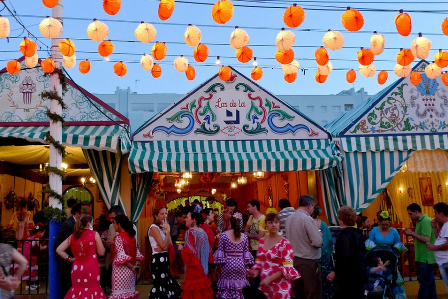
04
El paseo de caballos
From midday until eight in the evening the streets of the Real belong to horses. Riders in traje corto, carriages of four, six and sometimes ten horses, women riding side-saddle behind them in flamenco dress — all of it moving at walking pace along the sand while the casetas fill up for lunch.
It is the part of the fair that has survived intact from the livestock market of 1847, and for many Sevillians it is the whole point. The carriages stop, someone hands up a glass of manzanilla, and the parade carries on.
At eight the horses leave and the streets are swept. What follows is the night.
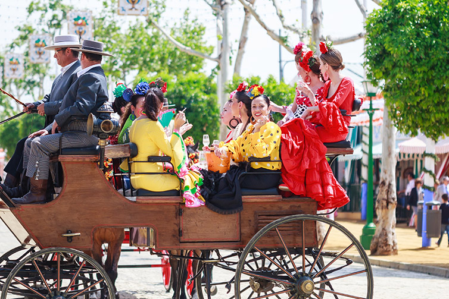
05
What people wear
The traje de flamenca is not a costume; it is a dress that changes with fashion every year, in the cut of the sleeve, the number of ruffles, the colours that are in. Women order them months ahead and wear them for the day, with a flower in the hair, earrings and a shawl for when the evening cools.
Men wear a suit, or the traje corto if they are riding — short jacket, high-waisted trousers, boots and a wide-brimmed sombrero.
Nobody expects a visitor to dress up, and plenty do not. But if you want to, buy or rent in Seville rather than bringing something from home, and the difference will be obvious.
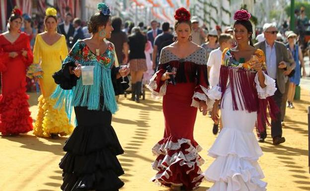
06
Sevillanas and rebujito
Sevillanas are not flamenco. They are Andalusian folk dance, danced in pairs, in four parts, and almost everyone in the city learned them as a child. Inside a caseta they go on all night, and the standard is high enough that watching is a pleasure in itself.
The drink is rebujito: dry manzanilla sherry from Sanlúcar cut with lemonade over a lot of ice, served in jugs. It is lighter than it tastes, which is exactly the trap. Fino, beer and wine are all poured as well.
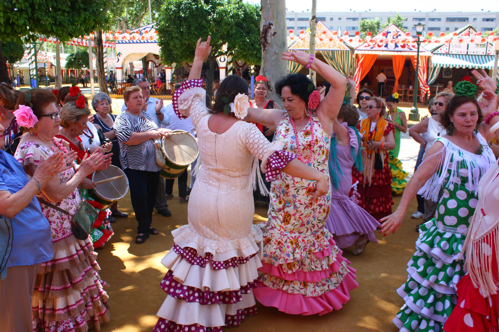
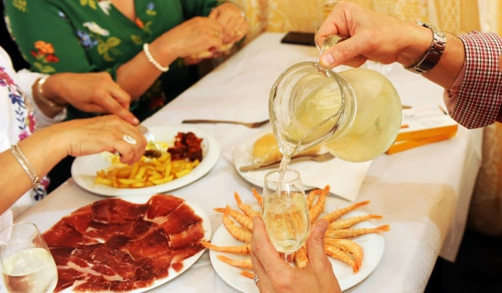
07
What to eat
Feria food is fried, shared and eaten late. The pescaíto frito of the opening night sets the tone: boquerones, adobo, calamari, whatever came in that morning, in a paper cone or on a plate in the middle of the table.
Beyond that, expect ham cut at the bar, montaditos, tortilla, prawns, and a stew if the caseta has a kitchen worth the name. Nothing is elaborate and everything is meant for a table of eight.
At four in the morning the churro stalls on the edge of the fairground do the last service of the night, with hot chocolate thick enough to stand a spoon in.
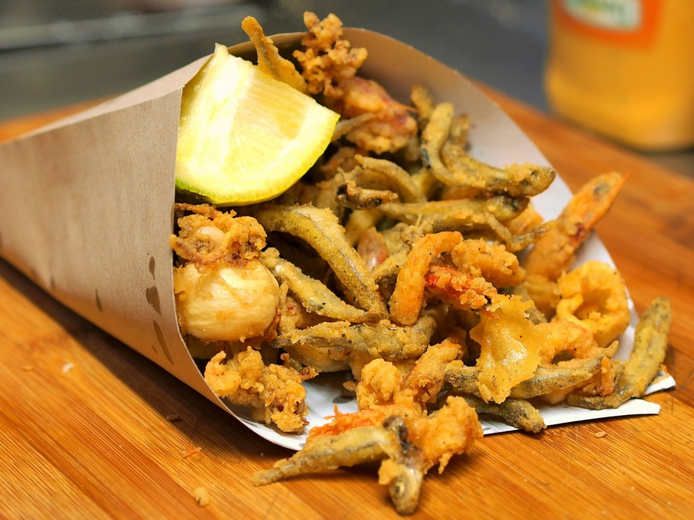
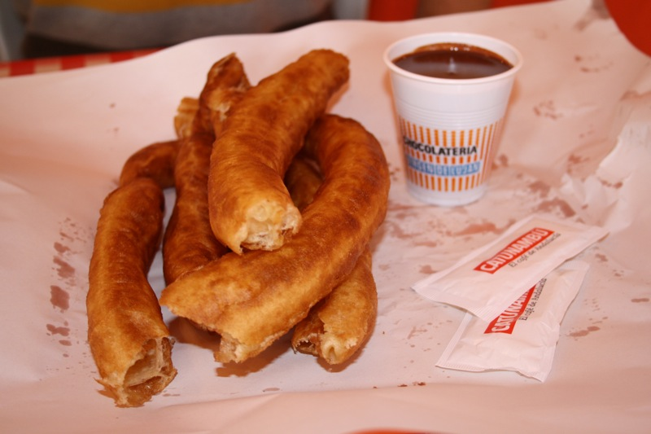
08
Calle del Infierno
At the far end of the Real is the funfair — the Calle del Infierno, the street of hell, named for the noise. Several hundred rides, shooting galleries and a big wheel that gives the best view there is of the whole fairground.
It is where the children are in the afternoon and the teenagers are at night, and it runs on its own economy of tokens and stuffed animals. Go up the wheel at dusk, when the lanterns come on below.
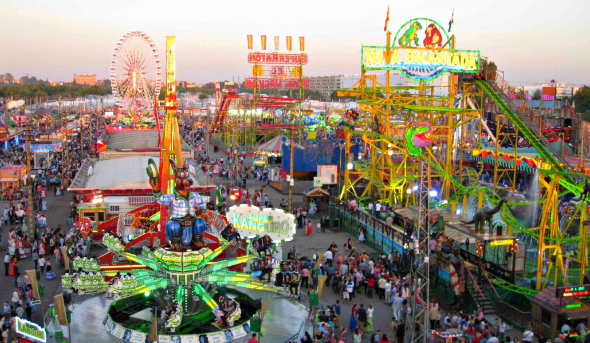
Going as a visitor
The Feria is not staged for tourists, which is what makes it worth seeing and also what makes it easy to get wrong. Arrive at three in the afternoon and you will find a half-empty fairground; arrive at eleven at night and you will find a city.
Walk or take a taxi to the edge and go in on foot — there is no parking, and the district is closed to traffic. Daytime is for the horses and the lunch tables, the small hours for the dancing. Thursday is the quietest of the nights and the locals’ favourite; the Saturdays at either end are the fullest.
Hotels are booked out and priced accordingly, so plan the trip months ahead. And if you would rather not stand outside the canvas looking in, that is the one thing a local can fix: we get guests into a caseta, with the dress, the horse carriage and the table already arranged.
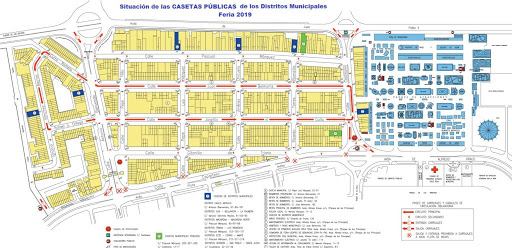
Frequently asked questions
{{ f.q }}+
{{ f.a }}

Written by
Gunvor Guttormsen
Licensed tour guide · Seville
Gunvor is an officially licensed guide based in Seville and the founder of Flavors of Andalucia. She guides in English and Norwegian, and also in Swedish and Danish, and has spent years walking the markets, bodegas and back streets she writes about here.
More about Gunvor